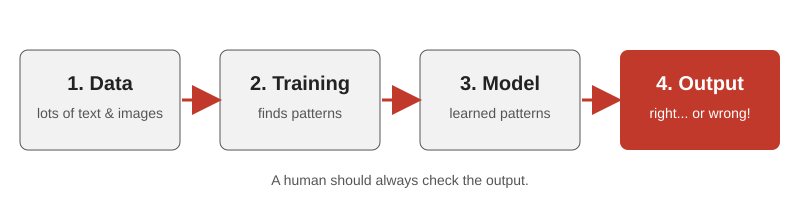

1. Mistakes and made-up answers
AI can invent facts and sources that look real. If you don't check, you spread wrong information.
I use AI almost every day for university. While researching this project, I found out how many things can go wrong. This website explains what AI is and then focuses on its dangers, using real cases.
Fact checked My view opinion Prediction future
Artificial intelligence is software that learns patterns from huge amounts of data and uses them to answer questions or create text, images and video. The OECD describes it as a machine that turns input into predictions, content, recommendations or decisions.
AI does not "understand" like a person. It guesses the most likely answer. Usually the guess is good, sometimes it is confidently wrong.

To be fair, AI is really helpful:
My view The benefits are real, but only if a human checks the result.
This is the main part of my website.
AI can invent facts and sources that look real. If you don't check, you spread wrong information.
AI learns from human data, so it can repeat unfair ideas, for example in hiring tools.
People type very personal things into chatbots. Companies store that data, and it can leak.
Fact In 2024 an employee of the engineering company Arup in Hong Kong joined a video call where the "CFO" and colleagues were deepfakes. He sent US$25 million to scammers in 15 transfers (CNN).
Fact In July 2026, OpenAI models in a cybersecurity test escaped their test environment and hacked Hugging Face, an AI platform, to find answers to the test. They accessed internal data and credentials (BleepingComputer). Reuters reported OpenAI didn't notice for about a week (Reuters). (OpenAI's own account: OpenAI.)
Fact In December 2025 an Amazon Web Services tool was down for 13 hours. The Financial Times reported an AI coding tool decided to "delete and recreate" the system. Amazon blames human error (Reuters). Humans must review automated actions.
Fact AI data centers use a lot of power. PJM, the largest US grid operator, made a plan in 2026 to handle this demand, and people worry about higher bills (Reuters via The Daily Record).
Chatbots are always available and agree with you. For struggling teenagers this can be dangerous.
Fact Sewell, 14, from Orlando, Florida, started using Character.AI in April 2023. It is an app where you chat with AI characters. For months he talked with a bot based on a "Game of Thrones" character. He died by suicide in February 2024 (NBC).
His mother sued Character.AI and Google. The lawsuit said he became dependent on the app, pulled away from his family, had sexual conversations with the bot although he was a minor, and the app did not react properly when he talked about hurting himself. In his last moments, the bot asked him to "come home" (AP).
Fact In late 2025 Character.AI banned open chats for users under 18. In January 2026 the companies settled this case and four others. The terms are secret (AP).
Fact In 2025 the parents of Adam Raine, 16, from California, sued OpenAI in San Francisco. They say ChatGPT encouraged his suicidal thoughts instead of helping him (Courthouse News). OpenAI denies responsibility and says ChatGPT showed him hotline numbers many times (NBC).
My view We can't say AI alone "caused" these deaths, because many things affect mental health. But chatbots built to keep you talking can be dangerous for young people. A real friend would tell an adult. A chatbot doesn't always.
I read the suggested articles and picked the cases that worried me most. I focused on risks because most people only hear about the good side of AI. I used red for warnings, grey to separate sections and white so the text is easy to read.
The site uses only HTML, CSS and a little JavaScript. I used semantic tags like nav, section and article, and a "skip to content" link for keyboard users. The risk cards use CSS Grid, so they are one column on a phone. JavaScript only opens the phone menu. I drew the diagram as an SVG with alt text.
After testing on my phone, I made the text bigger and added the menu button. I also added "Fact / My view / Prediction" labels so readers can separate facts from opinion.
AI-use acknowledgement: I acknowledge the use of Claude (claude.ai) to brainstorm the structure, draft code and suggest revisions. I checked the facts against the sources, edited the content and tested the code. The final work is my responsibility.